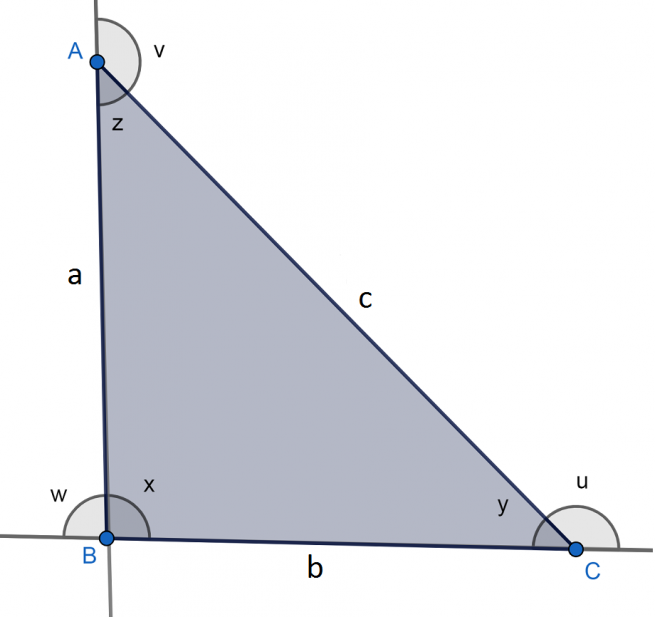
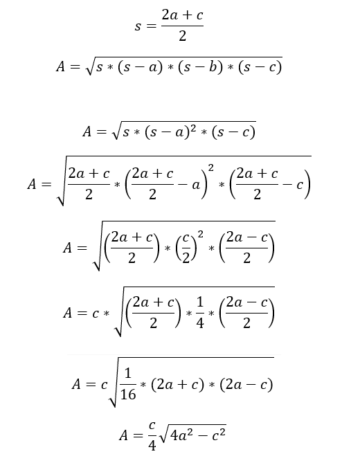

Triángulo isósceles
El triángulo isósceles es aquel que tiene dos lados con la misma longitud. Asimismo, los
dos ángulos que están frente a los lados iguales también miden lo mismo.
Este tipo de polígono es un caso particular dentro de los tipos de triángulo según la longitud
de sus lados.
Vale recordar que un polígono es una figura geométrica bidimensional que se constituye de la
unión de distintos puntos (que no formen parte de la misma línea) mediante segmentos de
recta. De ese modo, se construye un espacio cerrado.
Elementos del triángulo isósceles
- Vértices: A, B, C.
- Lados: AB, BC, AC, cada uno de los cuales mide, a, b y c, respectivamente, siendo los dos
lados iguales AB y BC. Entonces, a=b.
- Ángulos interiores: x,y,z. Los tres suman 180º. Cabe notar que si a=b, entonces z=y.
- Ángulos exteriores: u,v,w. Cada uno es suplementario al ángulo interior del mismo lado.
Es decir, se cumple que: 180º= v+z=u+y= w+x.

Tipos de triángulo isósceles
- Acutángulo: Todos sus ángulos son agudos, es decir, menores que 90º.
- Rectángulo: Uno de sus ángulos es de 90º y los otros dos miden 45º.
- Obtusángulo: Uno de sus ángulos es obtuso (mayor que 90º) y está formado por la
unión de los dos lados que son iguales. Los otros dos ángulos son agudos.
Perímetro y área del triángulo isósceles
Las características del triángulo isósceles se pueden medir en base a las siguientes fórmulas:
- Perímetro(P): P=a+b+c. Si a=b P=a+a+c=2a+c
- Área(A): En este caso, nos basamos en la fórmula de Herón donde s es el semiperímetro,
es decir, s=P/2
